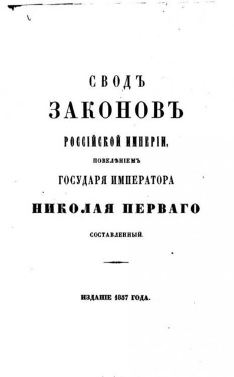

http://asnecto.livejournal.com/99654.html
Почему в Российской Империи почти не было атеистов
Знаете, почему в Российской империи почти не было атеистов? Вот поэтому:

СТАТЬЯ 181, Т. XV: "Кто в печатных, или хотя бы и письменных, но каким-либо образом распространяемых им сочинениях позволит себе богохуление, поношение святых господних, или порицания христианской веры, или церкви православной, или ругательства над священным писанием, тот подвергнется лишению всех прав состояния и ссылке на поселение. Сим же наказаниям подвергаются и те, которые будут заведомо продавать или иным способом распространять такие сочинения".
СТАТЬЯ 178 закона 1902 г.: "Кто в публичном месте при собрании более или менее многолюдном, дерзнет с умыслом орицать христианскую веру, или православную церковь, или ругаться над священным писанием, или святыми таинствами, тот подвергается лишению всех прав состояния и ссылке в каторжную работу на время от шести до восьми лет. Когда сие преступление учинено не в публичном месте (собрании), но однако ж, при свидетелях и с намерением поколебать их веру или произвести соблазн, то виновный приговаривается к лишению всех прав состояния и к ссылке на поселение".
И они будут рассказывать о гонениях на церковь при большевиках и долге государства???
05/11/2011